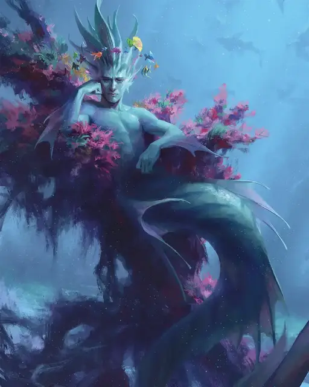

Хождение по воде
Water Walk
3 уровень, Преобразование (ритуал)

Время сотворения 1 действие
Дистанция 30 футов
Компоненты В, С, М (кусочек пробки)
Длительность 1 час
Классы Друид, Жрец, Изобретатель, Следопыт, Чародей
Подклассы круг земли (друид)
Это заклинание дарует способность перемещаться по жидкой поверхности — такой как вода, кислота, грязь, снег, зыбучий песок или лава — как если бы это была безвредная твёрдая поверхность (существа, идущие по жидкой лаве, всё равно получают урон от жара). До десяти согласных существ, видимых вами в пределах дистанции, получают эту способность на время действия заклинания.
Если вы делаете целью существо, погружённое в жидкость, заклинание поднимает его на поверхность со скоростью 60 футов в раунд.